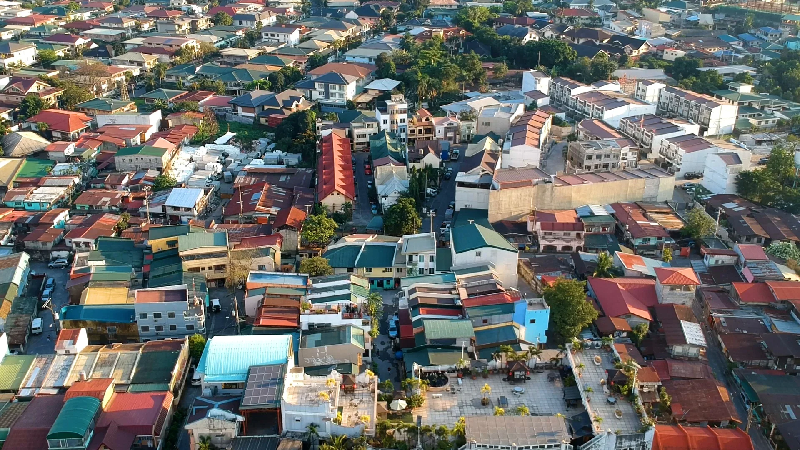

If you were to ask me what is the current socio-economic status of my family currently, I would probably have to say that we belong to the lower-middle class, wealthy enough to buy our basic needs and even wants but would probably be bankrupt if one or two family members get severely sick.
I say this because from what I have observed, people who have a similar situation like us are the most disadvantaged in our current society, this is because our income is taxed immensely and we do not receive any government benefits from us paying our taxes.
Some would say that we are luckier than others, that I would somewhat agree with, but sadly that does not mean that we have easier lives, it just means we have our own set of problems to deal with.
While I know that our family is well off and that my parents could probably provide for any need me and my siblings have, I still believe that I am dirt poor for anytime my parents could just decide to not support me in any of me endeavors for reasons or for no reason at all.
This is why I chose to study locally and go for scholarships, which I luckily got and I also got to go into a course that I am passionate at.
But at the cost of this practicality, I had to gave up one of my dreams of being a lawyer and serving the people due to my personal socio-economic status.

I know that my parents would be more than willing to send me off to some far-away university to take a undergraduate course as my pre-law and take up law school, but due to the current political and economical landscape of the country, I would have to forfeit said idea for I cannot see it as being practical.
For now, I am grateful to have the opportunity to study for free and even take up a course that I like (Information Technology), but in another time and another place, I would have loved pursuing my dream of becoming a lawyer.
I'm quite excited for what the future hold for me, even though it somewhat seems bleek due to the current circumstances, I am confident that I will be successful for I get to do one of the things that I love during college and that I have genuine passion for the career I have to plan.
Maybe this is one of the advantages of being part of the middle class, you are able to make decisions not only based entirely on practicality, but also on passion, and that you get to choose what you want to do with your life since you aren't surrounded by vapid airheads.
But with a scholarship that I need to maintain, and going into a school where I do not know anyone, I get to have my own set of problems. But then again, these problems that we are faced with are the foundations of our growth and instead of being adversive to them, we should instead embrace them and find growth in the challenge that they present to us.
I don't exactly know what message I wanted to deliver by writing this, but hey, just as not every story needs to have some moral lesson within in, maybe this article does not have any meaning to it as well and its just my way of venting my thoughts.